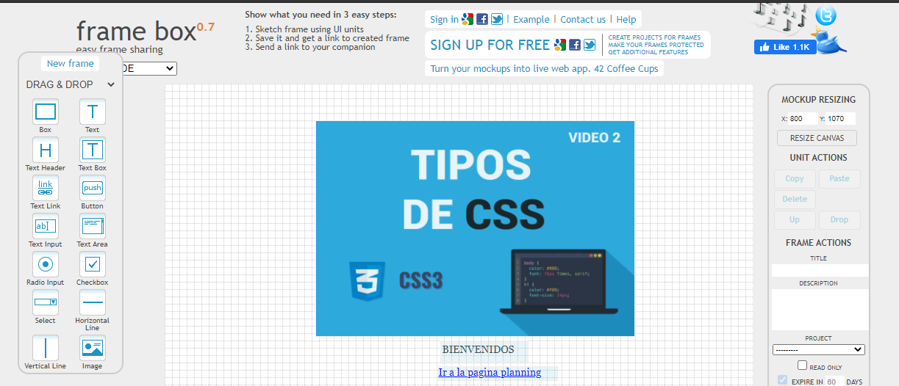

Identificar las diferentes formas de agregar estilos a elementos html
Conocer y comprender cual es el estilo interno en html
Comprender de que manera utilizar el estilo externo
Conocer cuales son los selectores CSS
Entorno de desarrollo Netbeans
Link de descargaLos estilos internos son definidos dentro del elemento <style> y éste dentro de la sección <head> del documento HTML Ejemplo:
<!doctype html>
<html>
<head>
<style>
body {background: lightgrey;}
h1 {color: blue;}
p {color: green;}
</style>
</head>
<body>
<h1>Este es un encabezado</h1>
<p>Este es un párrafo</p>
</body>
</html>
Las hojas de estilos externas, son utilizadas para definir el estilo en varias páginas con el mismo archivo externo CSS, así es posible realizar cambios en este archivo y afectando su presentación incluso para todo el sitio web.
Para usar una hoja de estilos externa (archivo CSS), se utiliza la etiqueta <link> en la sección <head> del documento HTML como a continuación lo mostramos:
<!doctype html>
<html>
<head>
<link rel="stylesheet" href="/estilos.css">
</head>
<body>
<h1>Este es un encabezado</h2>
<p>Este es un párrafo</p>
</body>
</html>
Una hoja de estilos CSS puede escribirse con cualquier editor de texto. El archivo no debe contener ninguna etiqueta HTML. El archivo de hoja de estilos debe ser guardada con la extensión .css.
Aquí una muestra de como luce una hoja de estilos "estilos.css" de ejemplo:
body {
background-color: lightgrey;
}
h1 {
color: blue;
}
p {
color: green;
}
eltnameinput se aplicará a cualquier elemento <input>.class especificado..classname.index seleccionará cualquier elemento que tenga la clase "index".id. Solo puede haber un elemento con un determinado ID dentro de un documento.#idname#toc se aplicará a cualquier elemento que tenga el ID "toc".* ns|* *|** se aplicará a todos los elementos del documento.[attr] [attr=value] [attr~=value] [attr|=value] [attr^=value] [attr$=value] [attr*=value][autoplay] seleccionará todos los elementos que tengan el atributo "autoplay" establecido (a cualquier valor).Mockup
 regresar a la pagina principal